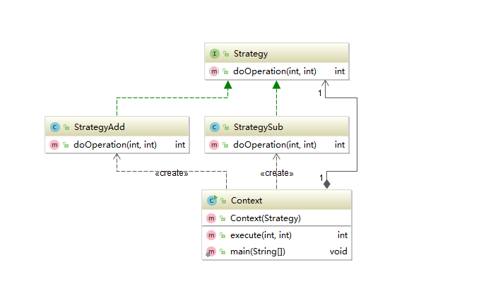
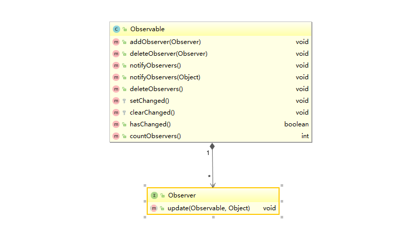
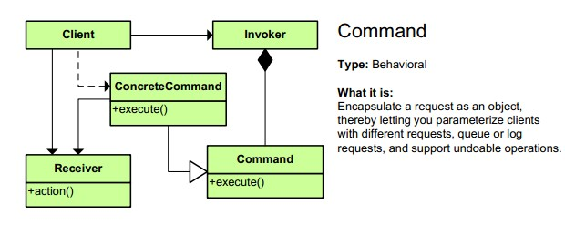
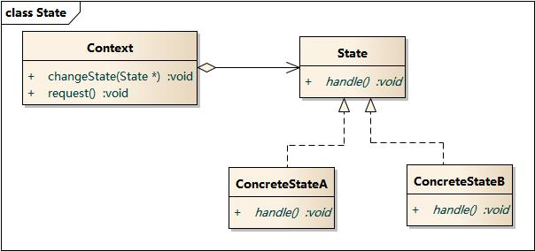

|
|
策略模式（Strategy）
定义一组算法，并把其封装到一个对象中。然后在运行时，可以灵活的使用其中的一个算法。

使用示例：
策略模式的策略不一定是通过组合变成context的成员变量，也可以像Comparator这种，作为Collections.sort的方法参数。
优点
- 策略类之间可以自由切换
- 由于策略类都实现同一个接口，所以使它们之间可以自由切换。
- 易于扩展
- 增加一个新的策略只需要添加一个具体的策略类即可，基本不需要改变原有的代码，符合“开闭原则“
- 避免使用多重条件选择语句（if else），充分体现面向对象设计思想。
缺点
- 客户端必须知道所有的策略类，并自行决定使用哪一个策略类。
- 策略模式将造成产生很多策略类，可以通过使用享元模式在一定程度上减少对象的数量。
JDK中的策略模式
|
|
观察者模式(Observer)
允许一个对象向所有的侦听的对象广播自己的消息或事件。
观察者模式所涉及的角色有：
●抽象主题(Subject)角色：抽象主题角色把所有对观察者对象的引用保存在一个聚集（比如ArrayList对象）里，每个主题都可以有任何数量的观察者。抽象主题提供一个接口，可以增加和删除观察者对象，抽象主题角色又叫做抽象被观察者(Observable)角色。
●具体主题(ConcreteSubject)角色：将有关状态存入具体观察者对象；在具体主题的内部状态改变时，给所有登记过的观察者发出通知。具体主题角色又叫做具体被观察者(Concrete Observable)角色。
●抽象观察者(Observer)角色：为所有的具体观察者定义一个接口，在得到主题的通知时更新自己，这个接口叫做更新接口。
●具体观察者(ConcreteObserver)角色：存储与主题的状态自恰的状态。具体观察者角色实现抽象观察者角色所要求的更新接口，以便使本身的状态与主题的状态 像协调。如果需要，具体观察者角色可以保持一个指向具体主题对象的引用。

优点
- 观察者模式可以实现表示层和数据逻辑层的分离，并定义了稳定的消息更新传递机制，抽象了更新接口，使得可以有各种各样不同的表示层作为具体观察者角色。
- 观察者模式在观察目标和观察者之间建立一个抽象的耦合。
- 观察者模式支持广播通信。
- 观察者模式符合“开闭原则”的要求。
缺点
- 如果一个观察目标对象有很多直接和间接的观察者的话，将所有的观察者都通知到会花费很多时间。
- 如果在观察者和观察目标之间有循环依赖的话，观察目标会触发它们之间进行循环调用，可能导致系统崩溃。
- 观察者模式没有相应的机制让观察者知道所观察的目标对象是怎么发生变化的，而仅仅只是知道观察目标发生了变化。
JDK中的观察者模式
|
|
命令模式(Command)
把一个或一些命令封装到一个对象中。

|
|
HystrixCommand也是典型的命令模式，HystrixCommand包装了Receiver的具体方法，可以很方便的对业务方法降级。
命令模式的本质是对请求进行封装，一个请求对应于一个命令，将发出命令的责任和执行命令的责任分割开。每一个命令都是一个操作：请求的一方发出请求要求执行一个操作；接收的一方收到请求，并执行相应的操作。命令模式允许请求的一方和接收的一方独立开来，使得请求的一方不必知道接收请求的一方的接口，更不必知道请求如何被接收、操作是否被执行、何时被执行，以及是怎么被执行的。命令模式的关键在于引入了抽象命令类，请求发送者针对抽象命令类编程，只有实现了抽象命令类的具体命令才与请求接收者相关联。
优点
- 降低系统的耦合度。
- 新的命令可以很容易地加入到系统中。
- 可以比较容易地设计一个命令队列和宏命令（组合命令）。
- 可以方便地实现对请求的Undo和Redo。
缺点
- 使用命令模式可能会导致某些系统有过多的具体命令类。因为针对每一个命令都需要设计一个具体命令类，因此某些系统可能需要大量具体命令类，这将影响命令模式的使用。
JDK中的命令模式
12java.lang.Runnablejavax.swing.Action
状态模式(State)

|
|
类似的场景可以用状态模式屏蔽掉恶心的if else 伪代码如下：
|
|
当然现在jdk 8已经支持string类型的switch case，用switch case替换if else代码也比较清晰，至于是否要用模式，还需要按具体场景评估。
JDK中的状态模式
|
|
责任链模式(Chain of responsibility)
把一个对象在一个链接传递直到被处理。在这个链上的所有的对象有相同的接口（抽象类）但却有不同的实现。
责任链模式比较经典的要数netty的handle模型和servlet的filter
JDK中的责任链模式
|
|
总结
设计模式应该是深刻理解然后再使用的产物，即便是理解了，我觉得也要仔细思考一下问题再决定是否需要使用设计模式。（特别是在业务代码中，经常在工作中看到一些反模式的应用，给开发人员带来很大的困扰，）
- 需要额外引入哪些新的概念。要明白一段代码涉及的概念越多，就越难理解。
- 设计模式自身的实现复杂度
- 一旦引入后，为了保持设计所带来的灵活性，后续开发需要注意的地方。是否能通过代码层面的限制来保证灵活性不会被破坏。
- 团队中其他人对这个设计模式的理解程度5. 对排错调试，代码静态分析可能造成的影响 （例如Observer模式和Visitor模式往往会打乱静态分析，难以通过阅读代码确定执行状态）
参考文档
https://coolshell.cn/articles/3320.html
https://design-patterns.readthedocs.io/zh_CN/
https://www.zhihu.com/question/23757906